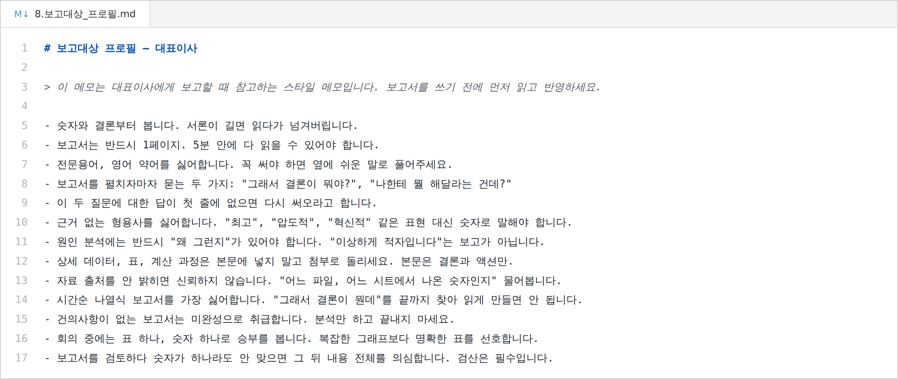
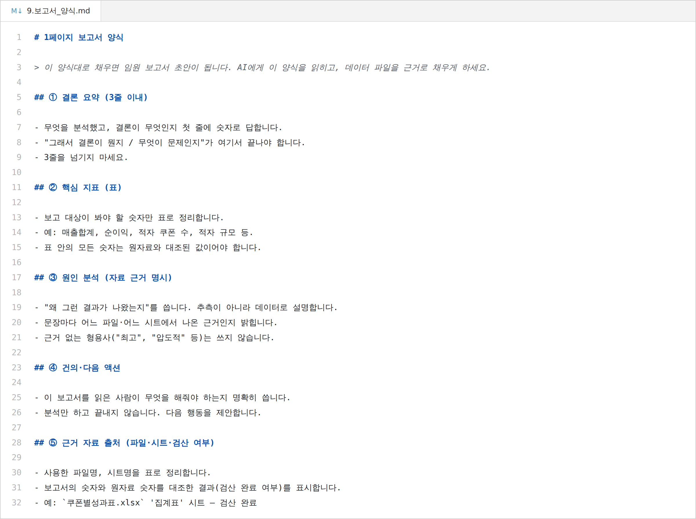

// 실습 4 · 임원용 1페이지 보고서
개요¶
한 줄 목표: 쿠폰 성과 분석 결과를 대표이사가 5분 안에 읽는 한 페이지 보고서로, 지어낸 표현 없이 숫자마다 출처를 붙여 만든다.
이 실습에서 쓰는 업무 유형 — 쓰기(초안 작성) 검사하기(검증·검수) · 여섯 가지 유형 다시 보기
오늘 받은 일¶
여러분은 쿠폰 성과 분석을 마쳤습니다. 마케팅팀 사수가 말합니다.
"분석 잘했어요. 이제 이걸 대표님께 올릴 한 페이지 분량의 보고서로 만들어줘요. 대표님은 숫자와 결론부터 보고, 서론 길면 넘겨버려요. 근거 없는 형용사를 싫어하고, 숫자마다 어느 파일·시트에서 나왔는지 출처를 물어요. 분석만 하고 끝내지 말고 건의사항까지 넣어야 완성이에요. 대표님 성향 메모랑 보고서 양식 줄게요."
실습 3에서 적자 쿠폰 8개와 채널 이상 징후까지 찾아냈지만, 신입에게는 조치 권한이 없습니다. 상사에게 보고해서 "어떻게 할까"라는 결정을 이끌어내야 이 일이 진짜로 끝납니다. 그래서 이번 실습에서는 분석 결과를 대표이사가 읽을 문서로 바꿉니다.
보고서는 "내가 이만큼 고생했다"를 자랑하는 문서가 아닙니다. 받는 사람이 결정을 내리도록 돕는 문서라는 것 하나만 기억하고 시작하세요. 프로필·양식을 AI에게 먼저 읽혀 양식대로 초안을 쓰게 하고, 지어낸 표현이 없는지 검증까지 합니다.
폴더에 있는 것¶
| 파일 | 무엇 |
|---|---|
7.쿠폰별성과표.xlsx |
보고서의 근거 데이터 (쿠폰 44개 성과, 적자 8개 포함) |
6.GA5_주문종합.xlsx |
성과표의 원자료 (주문 종합) |
8.보고대상_프로필.md |
대표이사 성향 — 두괄식·1페이지·형용사 싫어함·출처 필수·건의 필수 |
9.보고서_양식.md |
5블록 양식 — 결론요약·핵심지표표·원인분석·건의·출처 |


실습에서 할 일¶
| 단계 | 할 일 |
|---|---|
| 1단계 | 프로필·양식을 바탕으로 양식대로 초안을 쓴다 |
| 2단계 | 형식과 내용 측면에서 검증한다 |